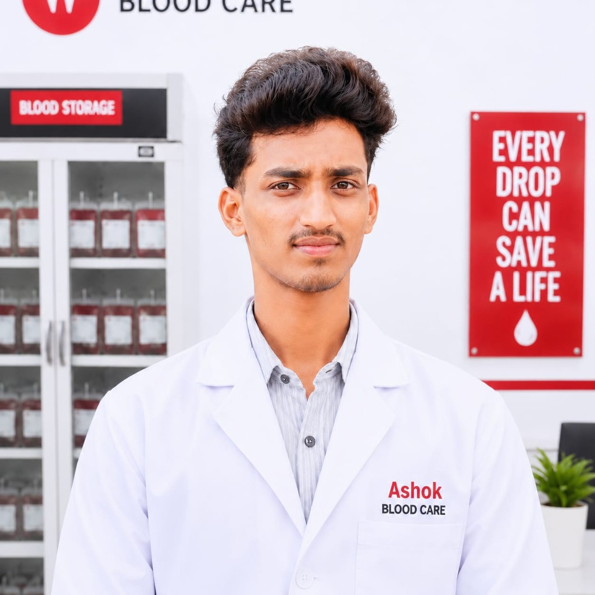

Built Around the
Value of Every Drop.
ASHOK Blood Care is a student-built demonstration platform exploring how technology can make blood-management workflows clearer, more connected and easier to understand.

that matter
Our Story
ASHOK Blood Care began as a vision to bridge the gap between blood donors, blood banks, and patients. We recognized that efficient blood management could be transformed through thoughtful digital design and modern technology.
This platform demonstrates how digital solutions can simplify complex healthcare workflows, making it easier to save lives. Every feature has been designed with the user's needs in mind — whether it's a donor registering to help, or a hospital urgently requesting blood.


Our Mission
To demonstrate how technology can make blood management more efficient, transparent, and accessible to everyone who needs it. We believe that smart systems can reduce barriers between donors and those who need blood, ultimately saving more lives.
This project shows the potential of digital health platforms in making critical healthcare services more connected and responsive to community needs.
Our Vision
We envision a future where blood management is seamless, where donors are recognized and valued, and where hospitals can instantly access the blood they need. Technology should serve humanity, especially in healthcare.
This platform serves as a proof-of-concept for what's possible when we combine thoughtful design with technology to solve real healthcare challenges.

Our Values
Behind the Vision

ASHOK KUMAR
ASHOK Blood Care represents my passion for combining technology with real-world healthcare challenges. As a B.Tech CSE student, I built this platform to explore how digital solutions can make a tangible difference in saving lives.
This project demonstrates the intersection of technical skills, UI/UX design thinking, and a commitment to creating solutions that matter. Every page, every interaction has been carefully crafted to showcase what's possible when technology meets purpose.